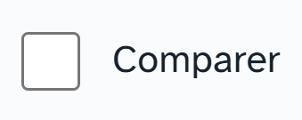
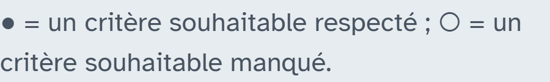

TECHNOLOGIE · 4ᵉ · P11 — L'eau · Activité 8 · 1
ProblématiqueQuel matériau choisir pour la turbine du robinet automatique, et quelle énergie a-t-il fallu pour la fabriquer ?
J'anime le robinet et je coche ce que la pièce subit vraiment.
Chaque case cochée, je l'ai vue arriver dans l'animation.
subir
Classer les échantillons
Je range les échantillons en groupes, puis je cherche d'où vient leur matière.
Mes groupes suivent l'origine de la matière, pas la couleur.
famille
Définir mes critères
Je range chaque carte : indispensable, souhaitable ou sans importance.
Pour chaque carte gardée, je sais finir « parce que la pièce… ».
critère
Trier les matériaux
J'active mes critères un par un, je compare, puis je choisis.
Mon choix reste en lice quand tous mes critères sont activés.
compromis
Valider ce matériau
Je réponds aux deux questions : la série, puis l'essai au collège.
Mes deux réponses tiennent compte du nombre de pièces.
procédé
Justifier mon choix
Je relis mes éliminations, j'écris mon argumentaire, je repère la masse volumique.
Famille, sous-famille, prénoms et classe sont remplis.
justifier
Enregistrer ma fiche en PDF
Mon relevé, au feutre effaçable : je note ici, au fil du parcours, ce qui ira sur ma fiche A8.
À la fin, je recopie sur ma fiche, puis j'efface.
Bloqué ? Retourne la fiche.
Indispensable :
parce que la turbine
Indispensable :
parce que la turbine
Mon choix :
J'écarte le
parce qu'il
Série :
Essai au collège :
en (matériau)
Famille :
Sous-famille :
Masse volumique :
g/cm³
Activité 8 · Je choisis un matériau avec la Matériauthèque · 1
Je prends seulement l'aide dont j'ai besoin. Je lis de gauche à droite et je m'arrête dès que je peux continuer seul.
coché = j'ai réussi l'étape sans le coup de pouce.
| Étape | 1 · Je me relance | 2 · Phrase-outil | 3 · Exemple : le carter du drone |
|---|---|---|---|
| 1J'observe | Est-ce que la pièce le subit vraiment, ou seulement parfois ? Regarde l'animation : est-ce que tu le vois arriver à la pièce ? | « La pièce subit … : je le vois quand … » | Le carter tombe à chaque atterrissage : je le vois à chaque vol, je coche. Écrasé par une voiture ? Ce n'est pas son usage normal : je ne coche pas. |
| 2Je classe | D'où vient la matière : du sous-sol, d'un être vivant, du pétrole, du sable ou de l'argile ? Ni la couleur, ni l'aspect, ni l'aimant ne suffisent. | « Je le range avec … parce que sa matière vient … » | Les bras du drone : des fibres de carbone noyées dans une résine. Deux matières collées ensemble, donc composites. Leur couleur noire ne compte pas. |
| 3Je définis mes critères | Si la pièce ne respecte pas ce critère, est-ce qu'elle ne marche plus du tout, ou seulement moins bien ? Je ne garde un critère que si je peux écrire « parce que la pièce… ». | « Indispensable, parce que la pièce … » « Souhaitable, parce que ce serait mieux si … » |
Résister aux chocs : indispensable, parce que le carter tombe à chaque atterrissage. Une jolie couleur : souhaitable, parce que le drone vole quand même sans elle. |
| 4Je trie | Plus aucun matériau ne passe ? Un de tes indispensables l'est-il vraiment ? Relis l'étape 1. Rappel : ● souhaitable respecté, ○ souhaitable manqué. | « Je garde le … parce qu'il respecte tous mes indispensables et … de mes souhaitables. » | Le verre ? Éliminé : il casse au premier choc. Parmi ceux qui restent, je compare 2 ou 3 matériaux côte à côte et je garde le meilleur compromis. |
| 5Je choisis le procédé | Combien de pièces ? En combien de temps ? Une seule pièce, ce n'est pas des milliers. Un matériau ne va jamais sans son procédé. | « Pour la série, ce procédé convient parce que … pièces prennent … » « Pour l'essai au collège, la machine … peut-elle travailler ce matériau ? » |
Pour 20 000 carters : durée pour un carter × 20 000. Si ça prend des mois, ce procédé ne convient pas pour la série. Pour 1 carter d'essai : je cherche une machine du collège qui accepte ce matériau. |
| 6Je justifie | Où l'appli t'affiche-t-elle la masse volumique ? Tu l'as déjà vue sur les cartes à l'étape 4, et elle est rappelée à l'étape 6. | « Je choisis le …, de la famille des …, sous-famille … » « J'écarte le … parce qu'il … » |
J'écarte le verre parce qu'il casse au premier choc. |
Activité 8 · Je choisis un matériau avec la Matériauthèque · 2
En binôme : un pilote à la souris, un vérificateur qui lit les fiches. On échange à l'étape 4.

sur 2 ou 3 matériaux pour les voir côte à côte.
| Matériaux métalliques | d'un minerai extrait du sous-sol | ||
| Matériaux organiques | d'un être vivant ou du pétrole | ||
| Céramiques et minéraux | de la roche, du sable ou de l'argile | ||
| Composites | de deux matériaux de familles différentes, collés ensemble |
Chaque famille garde sa couleur dans l'appli : regarde le bord des cartes. Sur cette fiche, un motif et un picto s'ajoutent à la couleur.
Activité 8 · Je choisis un matériau avec la Matériauthèque · 2
Exemple : carter A, 1 000 kJ ; carter B, 3 000 kJ. 3 000 ÷ 1 000 = 3 : le carter B demande 3 fois plus d'énergie grise.
| Ma turbine | L'autre turbine du tableur | |
|---|---|---|
| Masse | g | g |
| Énergie grise | kJ | kJ |
Combien de fois plus :
parce que
Au feutre effaçable. J'efface avant de rendre la fiche.
TECHNOLOGIE · 4ᵉ · P11 — L'eau, ressource essentielle · Activité 8
ProblématiqueQuel matériau choisir pour la turbine du robinet automatique, et quelle énergie a-t-il fallu pour la fabriquer ?
Je coche seulement ce que la pièce subit vraiment.
Classer les échantillonsJe range selon l'origine de la matière.
Définir mes critèresJe garde un critère si je peux dire « parce que la pièce… ».
Trier les matériauxJe compare 2 ou 3 matériaux, puis je choisis.
Valider ce matériauCombien de pièces, en combien de temps ?
Justifier mon choixJe remplis tout et je repère la masse volumique.
Enregistrer ma fiche en PDFMon relevé au feutre effaçable, pour ma fiche A8.
À la fin : je recopie, puis j'efface.
Bloqué ? Retourne la fiche.
Critère :
parce que
Critère :
parce que
Choix :
J'écarte
parce qu'il
Série :
Essai :
en
Famille :
Sous-fam. :
Masse vol. :g/cm³
Indispensable : il élimine.
Souhaitable : il départage.
Activité 8 · Coup de pouce · Je prends seulement l'aide dont j'ai besoin. coché = réussi seul.
| Étape | 1 · Je me relance | 2 · Phrase-outil |
|---|---|---|
| 1J'observe | Est-ce que la pièce le subit vraiment ? Le vois-tu dans l'animation ? | « La pièce subit … : je le vois quand … » |
| 2Je classe | D'où vient la matière ? Pas la couleur, pas l'aspect. | « Je le range avec … parce que sa matière vient … » |
| 3Je définis mes critères | Sans ce critère, la pièce ne marche plus du tout, ou seulement moins bien ? | « Indispensable, parce que la pièce … » |
| 4Je trie | Plus aucun matériau ne passe ? Relis l'étape 1. ● respecté, ○ manqué. | « Je garde le … parce qu'il … » |
| 5Je choisis le procédé | Combien de pièces ? En combien de temps ? | « Pour la série, ce procédé convient parce que … » |
| 6Je justifie | Où l'appli t'affiche-t-elle la masse volumique ? | « J'écarte le … parce qu'il … » |
Partie B : masse volumique (g/cm³) × volume (cm³) = masse (g), puis énergie grise du matériau (kJ/g) × masse (g) = énergie grise de la pièce (kJ).